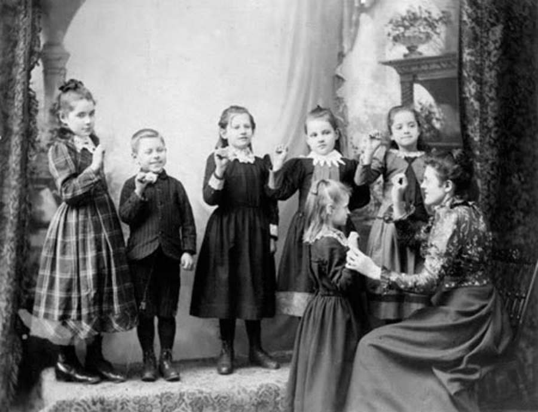

Historia de los Sordos
Habla con las manos, escucha con los ojos

Sucesos históricos que han marcado el proceso de desarrollo
social y educativo de las personas Sordas
Evolución de la educación
- Siglos XV-XVI - Gerolamo Cardano propuso algunos principios elementales para que las personas sordas tuvieran una educación
- 1545 - Pedro Ponce de León fue el primer maestro de personas sordas reconocido por la historia en España
- 1560 - Fray Ponce de León propuesta de alfabeto de manual
- Siglo XVII - Juan Pablo Bonet enseñó a oralizar a sus alumnos apoyándose de la dactilologia
- 1755 - Charles Michéle de L'Epée, Padre de la educación pública para sordos
- 1784 - Charles Michéle de L'Epée escribió un libro para profesores de Lengua de Señas en Francia
- 1864 - La Universidad Gallaudet fue originalmente una escuela de gramática para niños sordos y ciegos. La unversidad lleva el nombre de Thomas Hopkins Gallaudet, una figura notable en el avance de la educación de los sordos
- 1880 - Congreso de Milán Italia Prohibición de la Lengua de Señas
- 1924 - Primera escuela para Sordos en Francisco Luis Hernández Betancur (CIESOR) en Medellín
- 1925 - segunda escuela para Sordos en Sabiduría en Bogotá
- 1994 - Ley general educación 115 su Decreto 2082 de 1.996 integración de la educación Sorda
- 1997 - Necesidad de una educación bilingúe como integración y de servicios de interpretación, en el Decreto 2369 y Los modelos Linguísticos sordos fueron reconocidos legalmente por primera vez en Colombia
- 2000 - Educación bilingúe para las perosnas Sordas
"La educación tiene que contiuar en la construcción de derechos con la comunidad sorda, derecho a su Lengua y a su reconocimiento como personas diferentes pero con potencialidades."
-- Nahir Rodriguez